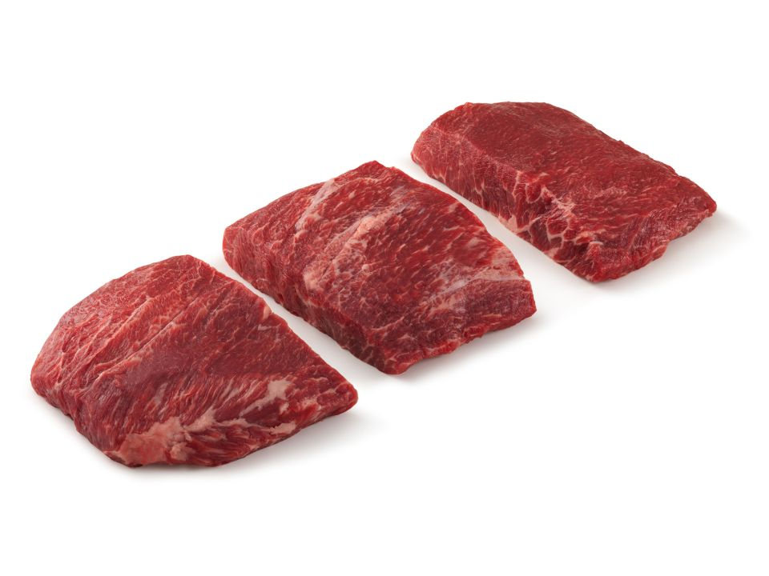

Cooking Tips
Table of Contents
1 Beef
1.1 Beef Cuts
1.1.1 Cheaper Side
These inexpensive cuts of beef deliver plenty of meaty flavor satisfaction, but they’re much easier on the wallet than some of the showier cuts.
These eight beef cuts are incredibly flavorful, but they’re unique and less likely to be spotted in your regular supermarket meats section. You may need to ask the butcher if they carry the cut or seek out a specialty butcher shop.
7-Bone Chuck Steak
Identified by the 7-shaped bone it contains. Slow-cook to bring out its full, savory flavor.
This cut of beef is known as the 7-bone steak because it has a lot of bones. It comes from the shoulder (the chuck), right beside the ribeye. That means it has all the flavor of a ribeye, but it has a much lower price tag.
Cook chuck steaks the same way you would a ribeye: quick sear on a grill or cast-iron skillet. Thick-cut chuck steaks can be great in a slow-cooker recipe. It has a little more chew than tender ribeye, and of course those bones.
BBQ BEEF CHUCK STEAK
Flavorful 7-Bone Chuck Steak is marinated and grilled. Use the marinade as your barbecue sauce.
Ingredients
- 1 beef 7-Bone Chuck Steak, cut 3/4 to 1 inch thick (about 2 pounds)
- Marinade
- 1 cup finely chopped onion
- 1 cup ketchup
- 1/3 cup packed brown sugar
- 1/3 cup red wine vinegar
- 1 tablespoon Worcestershire sauce
- 1/8 to 1/4 teaspoon crushed red peppe
Cooking
- Combine marinade ingredients in medium bowl. Place beef 7-Bone Chuck Steak and 1 cup marinade in food-safe plastic bag; turn to coat. Close bag securely and marinate in refrigerator 6 hours or as long as overnight, turning occasionally. Refrigerate remaining marinade.
- Remove steak; discard marinade. Place steak on grid over medium, ash-covered coals. Grill, covered, 12 to 14 minutes for medium rare (145°F) to medium (160°F) doneness, turning occasionally.
- Place remaining marinade in small saucepan; bring to a boil. Reduce heat; simmer 10 to 15 minutes or until sauce consistency, stirring occasionally.
- Cut steak into serving-size pieces. Serve with sauce.
Flat Iron or Top Blade

Also in the shoulder, you’ll find a fine steak that sits on the cow’s shoulder bladers. It may be sold as top blade or flat iron steak. The steak is actually two different muscles connected by a thick line of gristle. The gristle is often cut away to produce two cuts.
Flat iron steaks are very flavorful and buttery due to some good marbling. They behave and taste a lot like the more expensive flank steak. Because they’re so tender, you don’t need to do much more than grill a flat iron steak and season it with salt and pepper, or use a quick spice rub for tacos. This cut of steak would be great as a salad topper, too, or served with a creamy cauliflower mash and pan sauce.
BEEF STEAK AL FORNO
Ingredients
- 1 beef Flat Iron Steak (about 1 pound)
- 2 teaspoons chopped fresh thyme
- 2 teaspoons minced garlic
- 1/2 teaspoon pepper
- 2 tablespoons shredded Parmesan cheese
Directions
- Combine thyme, garlic and pepper; press evenly onto beef Flat Iron Steak.
- Place steak on grid over medium, ash-covered coals. Grill, covered, 10 to 14 minutes (over medium heat on preheated gas grill, 12 to 16 minutes) for medium rare (145°F) to medium (160°F) doneness, turning occasionally.
- During last 2 minutes of grilling, sprinkle with cheese.
- Carve steak across the grain into thin slices; season with salt and pepper, as desired.
Chuck-Eye Steak
This steak is basically a ribeye. In fact, it’s often called the “poor man’s ribeye.” It comes from the same part of the cow as the prize ribeye, but it’s cut thinner so butchers can get an extra piece to sell.
Cook chuck-eye steaks just like you would a real ribeye. Give it a little salt and pepper, and sear it on a cast-iron skillet or grill. Don’t overload this cut with a marinade or souped up steak sauce. It’s mild and buttery, so just let the flavor shine on its own.
Petite Tender
You may see this cut listed as teres major or petite tender at the butcher, but no matter the name, think these three words: cheap hanger steak. Once upon a time, hanger steak made these lists of cheap beef cuts because no one knew what that incredibly tender cut of beef was. Today, however, the secret is out. So the cheaper solution to the once-cheap hanger steak is petite tender or teres major.
This cut of beef acts like a filet mignon: lean, tender, and spongy when cooked right. Cut it into medallions and sear like filet mignon steaks, or sear the outside in a high-heat skillet and roast until medium-rare.
Tri-Tip Sirloin
This steak comes from a triangle-shaped muscle at the bottom of the sirloin. It’s often overlooked because it’s not particularly pretty (it doesn’t make consistently-sized steaks), but for the person who has no problem finding the beauty in some ugly ducklings, this is the steak for you.
The tri-tip sirloin steak takes well to a marinade and grilling. Cook it to medium to help break down some of the connective tissue that runs through it, or slice against the grain (at least as best you can) to make it more tender.
Beef Shank
So if you love the flavor of beef short ribs and want them for your meals, but loathe the price tag, pick up a pack of beef shank (or beef chins) instead.
These cuts have an incredibly beefy flavor that performs best in a long braise. Bonus: look at that marrow-packed bone in each cut. That’s a well of rich flavor waiting for your stew or roast.
Denver Steak
This cut of beef, which comes from the chuck primal cut, is also known as the boneless chuck short rib. However, don’t be confused—they are not deboned short ribs, and they don’t have to be braised. This cut is sometimes tricky for a butcher to get, so you may have a hard time finding it.
These steaks are tender and flavorful, great for grilling or slicing for a quick sauté. Slice against the grain to cut through some of the marbling and connective tissue. Don’t overcook these steaks either. They’ll turn tough in the blink of an eye.
Merlot
The merlot cut comes from the side of the cow’s heel. While these hind leg cuts are often very lean (aka tough) because of their heavy use, this one manages to be quite tender. Because of its stronger flavor but tender texture, this cut is great in everything from stir-fries to sheet-pan dinners.
The merlot cut gets it name from its ruby red color. That’s the blood in the cut. Indeed, if you’re blood-averse, avoid this cut. Also, don’t overcook the merlot cut. It will very quickly produce an irony flavor.